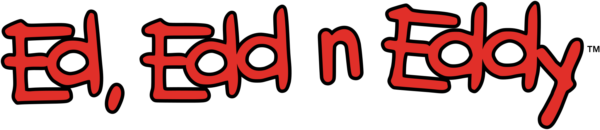

Ed, Edd y Eddy
 Ed, Edd y Eddy se centra en la vida de los Eds, tres chicos preadolescentes cuyos planes para estafar a los miembros de su vecindario y poder comprar caramelos son, generalmente, la base de sus desventuras durante lo que parecen ser unas interminables vacaciones de verano.
Los tres, tratados con sumo desdén por los demás vecinos, difieren grandemente en personalidad, pero les une su gusto por los caramelos y la constante ambición por conseguir dinero. El líder, Eddy, es un megalómano amante de la atención que planifica todas las trampas con las cuales el trío ocupa su tiempo libre. Ed, quien suele aportar su descomunal fuerza física, es un aficionado a las películas de monstruos y se compromete fácilmente en los proyectos de Eddy; entre los otros Eds, se caracteriza por su escasa inteligencia. El tercero, Edd, es llamado Doble D para evitar confusión con Ed. Estudioso, tranquilo, pulcro y sumamente cortés, es una especie de chico genio que crea útiles artilugios y jamás se quita su gorro negro.
Aunque los Eds son persistentes, muchas de sus travesuras resultan en fracaso y humillación frente a sus vecinos, en lugar de generarles el respeto que buscan. Dado que no aprenden ninguna lección, retoman sus objetivos en cada episodio.
| Información general | |
|---|---|
| Nombre | Ed, Edd y Eddy (en inglés: Ed, Edd n Eddy) |
| Género | Comedia Recuentos de la vida |
| Creado y Dirigido por | Danny Antonucci |
| Guion por | Danny Antonucci Jono Howard Mike Kubat Rachel Connor Michael Hockney |
| Voces de | Matt Hill Samuel Vincent Tony Sampson David Paul Grove Peter Kelamis Kathleen Barr Tabitha St. Germain Janyse Jaud Keenan Christensen Erin Fitzgerald Jenn Forgie |
| Compositor | Patric Caird |
| País de origen | Canadá |
| Idioma original | Inglés |
| Cantidad de episodios | 69 (66 episodios (131 segmentos) y 3 especiales) |
| Cantidad de temporadas | 6 |
| Duración | 22 minutos |
| Producción | |
| Productor ejecutivo | Danny Antonucci |
| Productores | Daniel Sioui Ruth Vincent Christine L. Danzo |
| Empresas productoras | a.k.a. Cartoon Cartoon Network Yeson Animation Studios |
| Lanzamiento | |
| Medio de difusión | Cartoon Network |
| Formato de imagen | NTSC (480i) |
| Formato de audio | Dolby Digital |
| Primera emisión | 4 de enero de 1999 |
| Última emisión | 8 de noviembre de 2009 (Finalizado) |